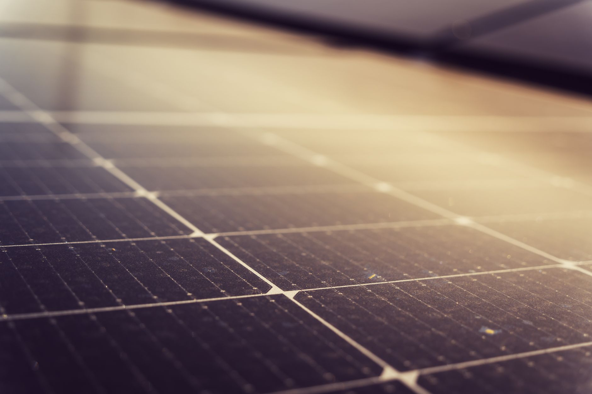

How much silver actually goes into solar panels? It’s a surprisingly complex question, and one that’s often misunderstood. You might assume it’s a massive, readily available commodity, but the reality is far more nuanced. At Fused Distribution, we stock physical silver, and we understand the intricacies of its use in various industries - including the rapidly growing solar energy sector. We’re here to break down exactly how much silver is incorporated into solar panel manufacturing, why it matters, and how it relates to your potential silver investment. We focus on clear value, removing dealer markup games and offering straightforward access to physical silver. Reserve your silver today at our reserve page.

The Critical Role of Silver in Photovoltaic Cells
Silver isn’t just a pretty metal; it’s a vital component in the efficiency of solar panels. Specifically, it’s used extensively in the manufacturing of photovoltaic (PV) cells, the heart of any solar panel. The primary function of silver is to act as a conductor, facilitating the flow of electrons and maximizing the panel’s ability to convert sunlight into electricity. Without sufficient silver, the panel’s output would be drastically reduced. The amount of silver used varies significantly depending on the panel’s design, the type of silicon being used, and the manufacturing process. It’s a key factor in the panel’s overall performance and cost. This conductivity is crucial for transporting the generated electrons from the silicon cell to the external circuit.
Silver Content: A Panel-by-Panel Comparison
Let’s get specific. The amount of silver per watt of solar panel capacity can vary considerably. A typical crystalline silicon solar panel might contain around 0.3 to 0.5 grams of silver per watt. Thin-film solar panels, which use different materials like cadmium telluride or copper indium gallium selenide, can sometimes require significantly more - upwards of 1.5 grams per watt. This difference highlights how design choices directly impact silver usage. For example, a high-efficiency panel designed for maximum light absorption will likely incorporate more silver to ensure optimal electron flow. The cost of silver is a component of the panel’s overall price, but it’s not usually the dominant cost driver. Factors like silicon production, glass manufacturing, and encapsulation materials contribute more significantly to the overall cost structure.

Silver’s Contribution to Panel Cost - A Realistic Perspective
While silver is essential, it’s important to understand its relative contribution to the final panel price. According to industry estimates, silver accounts for approximately 15-20% of the total cost of manufacturing a solar panel. That’s a substantial figure, but it’s important to remember that solar panel manufacturing is a complex process involving many materials and labor costs. The price of silicon, glass, encapsulants, and other components also plays a significant role. Also, the cost of silver fluctuates with market conditions, influenced by factors like global demand, mining production, and geopolitical events. You won’t find confusing premiums here at Fused Distribution; our pricing reflects the true value of the physical silver.
Technological Variations and Silver Demand
Different solar panel technologies use varying amounts of silver. Monocrystalline panels, known for their high efficiency, often require more silver than polycrystalline panels. This is because monocrystalline cells generally have a more complex structure, necessitating a greater amount of conductive material. The specific cell design - whether it’s a back-contact or a front-contact design - can influence silver usage. For instance, back-contact panels, which have all the electrical contacts on the back of the cell, tend to require less silver than front-contact panels. Research into advanced cell architectures continues to drive innovation and, as a result, silver demand. The trend toward higher-efficiency panels is driving increased silver demand, pushing manufacturers to optimize their processes and explore alternative materials.
Calculating Silver Usage: A Gram-Per-Watt Perspective
Let’s put these numbers into perspective. Consider a 400-watt solar panel. Using the average silver content of 0.4 grams per watt, that panel would contain approximately 160 grams of silver. This is a significant quantity - equivalent to about 8 ounces of silver. This illustrates the scale of silver demand within the solar industry. It’s a key factor to consider when evaluating the long-term sustainability of the solar market and the potential impact of silver prices. We recommend carefully considering the grade of silver you're investing in, as this directly impacts its value. Factors like purity and form (e.g., bullion, coins, bars) will influence its market price. For more on this, see Silver Industrial Uses Explained For Investors.
Silver Grade and Investment Value: A Critical Distinction
The “grade” of silver is essential when considering it as an investment, and this is directly linked to its use in solar panels. Silver comes in different purities, with higher purity (e.g., .999 fine silver) commanding a premium. The silver used in solar panel manufacturing is often of a lower grade, as it’s primarily valued for its conductivity rather than its investment potential. Therefore, when investing in silver, it’s crucial to focus on higher-purity silver, which will hold its value better over time. Investing in silver bullion or coins offers greater control and transparency compared to investing in silver embedded within a product like a solar panel. At Fused Distribution, we prioritize offering high-quality silver, ensuring you’re making a sound investment.
How Silver Content Relates to Physical Silver Investment
The silver embedded within solar panels represents a potential source of physical silver supply. As solar panel production continues to grow, the amount of silver used will inevitably increase. While the silver is currently integrated into panels, there’s a growing discussion about recycling these panels at the end of their lifespan - a process that could recover a significant amount of silver. However, current recycling infrastructure is limited, and the economics of silver recovery are complex, often hampered by the cost of separating the silver from other materials. Investing in physical silver provides a more direct and reliable route to owning and benefiting from this valuable metal. Also, the long-term stability of the solar market and the potential for increased recycling are factors to consider when evaluating the overall silver supply picture.
What to Look For When Evaluating Solar Silver Claims
Be wary of overly optimistic claims about silver content in solar panels. Many manufacturers exaggerate the amount of silver used to promote their products. It’s essential to scrutinize the specifications carefully and understand the underlying technology. Don’t be swayed by marketing jargon; focus on verifiable data. Also, remember that the silver used in solar panels is not the same as the silver you’d purchase as an investment. The two are fundamentally different assets with distinct characteristics and price drivers. Independent verification of silver content claims is often difficult to obtain.
The Future of Silver in Solar: Innovation and Sustainability
The future of silver in solar panels is intertwined with ongoing innovation and a growing emphasis on sustainability. Researchers are exploring alternative conductive materials to reduce silver usage, such as copper and graphene. However, silver remains the most effective and cost-efficient option for many applications, particularly in high-efficiency panels. The increasing demand for solar energy is driving continued research and development in this area. Also, advancements in recycling technology could significantly improve the recovery of silver from end-of-life solar panels, potentially mitigating concerns about supply chain sustainability. We are committed to providing you with transparent information about the silver market and its evolving role in the solar industry.
Stop guessing about premiums. Reserve your silver straightforwardly at our reserve page.